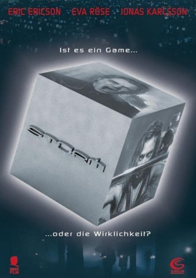

#10726 Game over
Alternativ: Storm (Englischer Titel)
 
 IMDB-Wertung: 5.8 / 10
IMDB-Wertung: 5.8 / 10  Tomatometer: 20
Tomatometer: 20  Metascore: 0
Metascore: 0 
Donny ist hipper Lifestyle-Reporter, kommt überall rein und wird von allen gemocht. Das Leben könnte so weiter gehen, würde nicht eines Abends die rothaarige Promise in sein Taxi stürzt – verfolgt von einigen finsteren Gestalten. Schon ist Donny im Alptraum seines Lebens, taucht die Rothaarige doch später in seiner Wohnung auf und gibt ihm einen merkwürdigen silbernen Würfel. Wenig später nimmt eine Gruppe Unbekannter Donnys Wohnung auseinander. Der Reporter wird mit tiefschwarzen Ereignissen seiner Vergangenheit konfrontiert und muss sich buchstäblich seinem Dämon stellen.
Jahr: 2005
Dauer: 115 Minuten
FSK: 16
Land: Schweden Studio: Sunfilm EntertainmentTonspuren: DTS - ,
Untertitel: Deutsch,
Auflösung: 1080p (1920x816) Größe: 3604 MB
Genre: Thriller, Drama, Fantasy, Mystery
Regisseur: Måns Mårlind, Björn Stein
Drehbuch: Måns Mårlind
Soundtrack: Carl-Michael Herlöfsson
Darsteller:
- Eric Ericson als Donny 'DD' Davidsson
- Eva Röse als Lova
 Jonas Karlsson als Man i kostym / Man in suit
Jonas Karlsson als Man i kostym / Man in suit- Lina Englund als Medhjälpare / Assistant
- Jacqueline Ramel als Malin
 Matias Varela als Knugen
Matias Varela als Knugen Joel Kinnaman als Bartender
Joel Kinnaman als Bartender- Per Ragnar als Vakthavande / Man on duty
- Adam Lundgren als DD (som tonåring) / DD
- Niclas Larsson als Ronny (som barn) / Ronny
- Katia Winter als Barflicka / Bargirl (uncredited)
- Peter Engman als Taxi-chaufför / Cabbie
- Karl Norrhäll als Jeppon
- Sasha Becker als Helena
- Oscar Åkermo als DD (som barn) / DD
- Christian Rinmad als Ronny
- Victor Ström als Mormon
- Sofia Hvittfeldt als Katta
- Jim Ramel Kjellgren als Spelare / gamer
- Mikael Fredriksson als Mobbare / Bully
- Marcus Gummesson als Mobbare / Bully
- Henrik Hofling als Mobbare / Bully
- Christoffer von Reis als Bög #1 / Gay man #1
- Robert Jitzmark als Bög #2 / Gay man #2
- Jens Ekbom als Älskande man / Male lover
- Ann-Sofie Lundin als Älskande kvinna / Female lover
- Freddi Lindkvist als Polis / Police
- Jesper Malmberg als Polis / Police
- Niklas Persson als Polis / Police
 Jörgen Berthage als Goon
Jörgen Berthage als Goon- Martin Blad als Goon
- Carl-Johan Kihlbom als Goon
- Andreas Ljung als Goon
- Anders Simonsson als Goon
- Victor Smedinge als Goon
- Magnus Stenius als Goon
- Olle Toftenow als Goon
- Johannes Wikström als Goon
- Mikael Brolin als Goon
- Janne Lindqvist als Goon (uncredited)
- Katarina Sandström als Nyhetsankare / Newsreporter (uncredited)
Datei: X:\2005(G-M)\Game over (2005, FSK16, 1920x816).mkv seit 22.02.2019
Festplatte: HD 2005(G-Z)-2006(A-Z)
 Es gibt insgesamt 46 Filme in der Gruppe '2005(G-M)'
Es gibt insgesamt 46 Filme in der Gruppe '2005(G-M)'